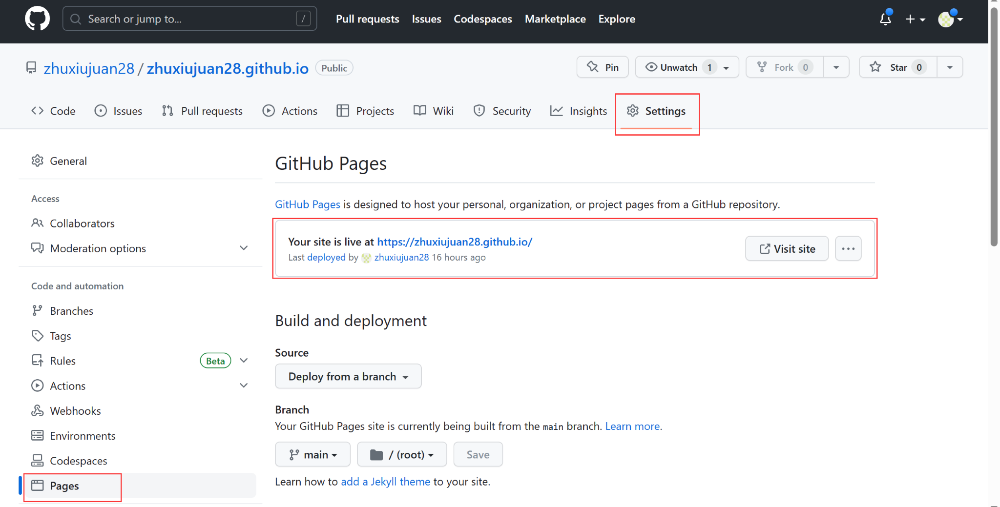

Create a GitHub Page
GitHub Pages is designed to host your personal, organization, or project pages from a GitHub repository. Just edit and push, your changes are live.
-
Sign in to your GitHub account.
-
Head over to GitHub and create a new public repository named username.github.io, where username is your username (or organization name) on GitHub.
If the first part of the repository doesn’t exactly match your username, it won’t work, so make sure to get it right.
- Open Git Bash or other terminals, go to the folder where you want to store your project, and clone the new repository.
git clone https://github.com/username/username.github.io
- Enter the project folder and add an index.html file.
cd username.github.io
echo "Hello World" > index.html
- Add, commit, and push your changes.
git add --all
git commit -m "Initial commit"
git push -u origin main
- Enter your GitHub repository, click Settings > Pages, and you can see that your GitHub Page is created. Click to view the site.
